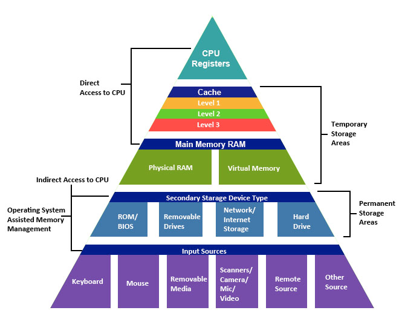
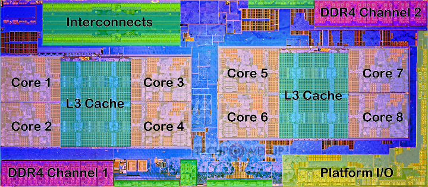
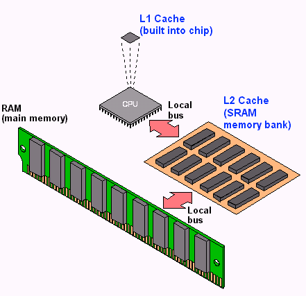
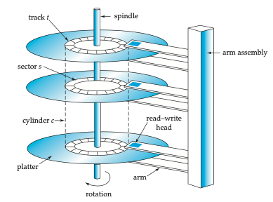
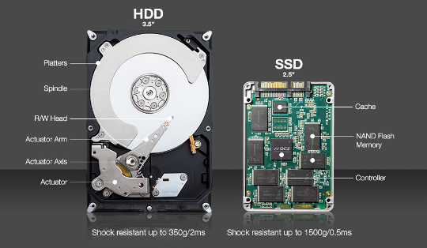
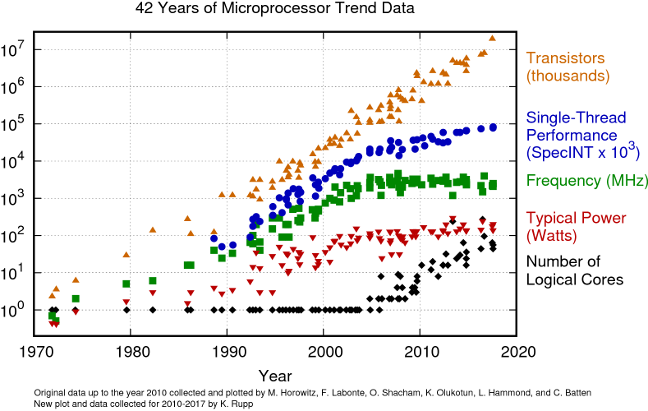
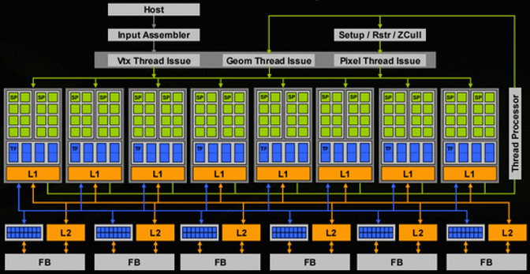
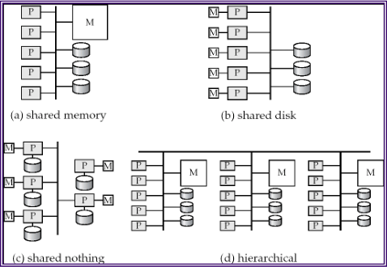
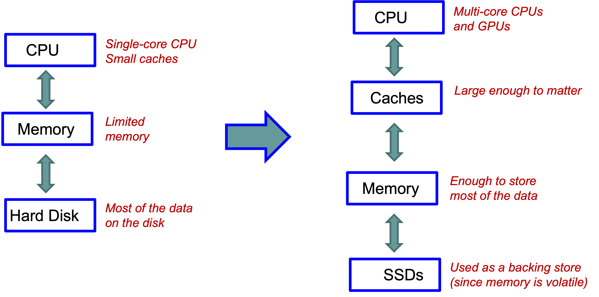
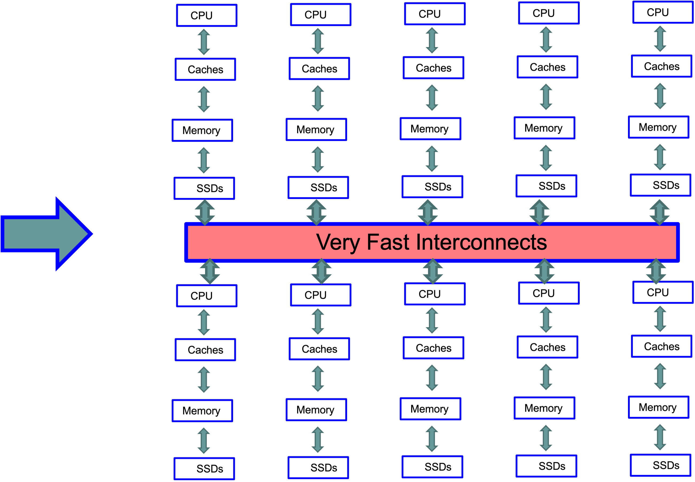

CMSC424: Storage and Indexes — Computing Hardware
Instructor: Amol Deshpande
1. Introduction: Database Implementation
Up to this point in the course, we have focused on logical database design — schemas, relational algebra, and SQL. We now shift our attention to the internal implementation of a DBMS: how data is physically stored, how queries are executed efficiently, and how correctness is ensured through transactions.
The topics we will cover in this module include:
- Storage devices (RAM, disks, SSDs) and their characteristics — the focus of this set of notes
- Tuple and file organization — how tuples and their attributes are laid out on disk blocks and memory pages
- Indexes (B+ trees, hash indexes, LSM trees) — data structures for efficiently finding specific tuples
- Query processing and optimization — how relational operations are executed and how the best execution plan is chosen
- Transactions and concurrency — how the ACID properties are supported
The focus of this first set of notes is on computing hardware and the storage hierarchy, which strongly influence how database systems are designed and where performance bottlenecks arise.
2. Why Hardware Matters for Databases
Database systems are fundamentally about two things: moving data and processing data. As a result, performance is dominated not just by algorithms, but by the characteristics of the underlying hardware — memory speed versus disk speed, sequential versus random access patterns, CPU parallelism, and network latency.
The gap between different levels of the storage hierarchy is enormous. Data sitting in a CPU cache can be accessed in nanoseconds, while data on a hard disk can take milliseconds to retrieve — a difference of six orders of magnitude. This gap matters a great deal when trying to extract the best performance out of a system. It is partly why we continue to see new database systems being developed: older systems like PostgreSQL were not designed to utilize CPU caches most effectively, and as hardware has evolved, new designs can exploit these characteristics much better.
Historically, databases operated under the assumption that data was large and memory was small, so disk I/O dominated everything. Today, memory is large (routinely measured in terabytes for servers), SSDs have replaced hard disks for most workloads, networks within data centers are extremely fast, and CPUs are multi-core. This shift has fundamentally changed how database systems are designed, and it continues to drive innovation in the field.
3. Storage Hierarchy
Overview
The storage hierarchy in a modern computer system consists of multiple layers, arranged from fastest-and-smallest at the top to slowest-and-largest at the bottom.

At the very top are CPU registers, which are the fastest storage available but hold only a tiny amount of data. Below that are caches (L1, L2, and L3), which are built into or near the CPU and provide very fast access to recently used data. Main memory (RAM) comes next — it is substantially larger than cache but slower to access. Below main memory sits secondary storage — hard disk drives (HDDs) or solid-state drives (SSDs) — which is non-volatile but much slower. Finally, tertiary storage such as tape drives and optical media provides the cheapest per-byte storage for archival purposes, at the cost of very high access latency.
As we move down the hierarchy, three things happen: capacity increases, cost per byte decreases, and access latency increases. Understanding these trade-offs is essential for database system design, because the system must carefully manage which data resides at which level in order to achieve good performance.
Volatile vs Non-Volatile Storage
An important distinction in the hierarchy is between volatile and non-volatile storage. Volatile memory — including registers, caches, and RAM — loses its contents when power is removed. Non-volatile storage — including SSDs, HDDs, and tapes — retains data even without power.
Database systems rely heavily on both: RAM provides the performance needed for active query processing, while disk or SSD storage provides the durability guarantees that databases require. A significant portion of database system design is concerned with managing the movement of data between these two categories of storage efficiently and correctly.
4. Orders of Magnitude: Why This Matters
To appreciate why the storage hierarchy matters so much, consider the following table of approximate access times. The “relative access time” column scales these numbers as if an L1 cache access took the time of a blink of an eye.
| Storage type | Access time | Relative access time |
|---|---|---|
| L1 cache | 0.5 ns | Blink of an eye |
| L2 cache | 7 ns | 4 seconds |
| 1 MB from RAM | 0.25 ms | 5 days |
| 1 MB from SSD | 1 ms | 23 days |
| HDD seek | 10 ms | 231 days |
| 1 MB from HDD | 20 ms | 1.25 years |
The key takeaway is that the gap between cache and disk is not just large — it is six orders of magnitude. Between nanoseconds and milliseconds, there are also microseconds, so the full span from L1 cache to disk access covers a factor of roughly one million. For a CPU, waiting 10-20 milliseconds to retrieve a single integer from disk is an eternity.
This is precisely why database systems invest heavily in buffering (keeping frequently accessed data in memory), why sequential access patterns are strongly preferred over random access, and why indexes are used to minimize the number of disk accesses needed to answer a query.
5. CPU Architecture and Caches
Modern Multi-Core CPUs
Modern CPUs contain multiple processing cores, each capable of executing instructions independently. The figure below shows the die layout of an AMD Ryzen processor with eight cores, shared L3 caches, DDR4 memory channels, and interconnects.

Cache Hierarchy
Between the CPU cores and main memory sits a hierarchy of caches that serve as high-speed buffers for recently accessed data.

The L1 cache is the smallest and fastest, typically private to each core. The L2 cache is larger and slightly slower, and the L3 cache is shared across multiple cores and larger still. When a CPU core needs to read a particular byte of data, it first checks L1, then L2, then L3, and only if the data is not found in any cache does it go to main memory.
Why Caches Matter for Databases
Accessing main memory has become relatively slow compared to CPU speeds, so caches play a critical role in overall system performance. Algorithms that exhibit locality of reference — meaning they tend to access the same data repeatedly (temporal locality) or access data that is near previously accessed data (spatial locality) — perform much better because their working set stays in cache.
For database operations, a sequential scan through a table is cache-friendly because it accesses memory locations in order, allowing the hardware prefetcher to bring data into cache before it is needed. In contrast, random access patterns — such as following pointers scattered across memory — cause frequent cache misses and are much slower. This distinction between cache-friendly and cache-unfriendly access patterns is one reason why some database designs dramatically outperform others on the same hardware.
6. Physical vs Virtual Memory
Physical memory refers to the actual RAM hardware installed in a computer. Virtual memory is an abstraction provided by the operating system that gives each running process the illusion of having a large, contiguous block of memory all to itself.
Virtual memory works through a mechanism called paging: the virtual address space is divided into fixed-size pages, and the operating system maintains a mapping from virtual pages to physical memory frames. When a process accesses a virtual address, the hardware translates it to the corresponding physical address. If the data is not currently in physical memory — because there is not enough RAM to hold everything — the operating system swaps it to disk and brings it back when needed. From the program’s perspective, the data appears to be in the same virtual location regardless of whether it is currently in physical RAM or has been temporarily moved to disk.
This matters for databases because relying on the operating system’s virtual memory paging can lead to unpredictable performance — the OS may swap out database pages at inopportune times, causing unexpected disk accesses. For this reason, many database systems manage their own memory explicitly through a component called a buffer manager, rather than relying on the operating system’s paging mechanism. The buffer manager decides which disk blocks to keep in memory and which to evict, using policies specifically tuned for database workloads.
7. Hard Disk Drives (HDDs)
Structure
Hard disk drives, also known as magnetic disks, were the primary non-volatile storage mechanism for databases for several decades. Although they have been largely supplanted by solid-state drives for most database workloads, understanding how they work is important because many algorithms and design decisions in database systems were originally motivated by the characteristics of hard disks.

A hard disk consists of one or more platters — circular disks coated with magnetic material — that spin at high speeds (typically 5,400 to 15,000 revolutions per minute). Each platter surface is organized into concentric tracks, and each track is divided into small sectors of typically 512 bytes — the smallest unit that can be read from or written to the disk. A read/write head mounted on a movable arm assembly floats just above the platter surface. To read data from a specific location, the arm must move the head to the correct track and then wait for the desired sector to rotate under the head.
Disk Access Cost
Accessing a particular data item on a hard disk involves three components of delay:
Seek time: The time required to move the arm to the correct track. This is a physical movement — the arm must be lifted, repositioned, and set down. This takes on average 4 to 10 milliseconds, and we are essentially at the physical limits of how fast this can be done. There has been very little improvement in seek times over the past couple of decades.
Rotational latency: Once the arm is positioned on the correct track, the disk must rotate until the desired sector passes under the read/write head. The arm sits at a fixed position on the track; it does not move along the track. The average rotational latency is half the time for one full revolution. For a disk spinning at 6,000 RPM, one revolution takes 10 milliseconds (since 6,000 RPM = 100 revolutions per second = 10 ms per revolution), giving an average rotational latency of 5 milliseconds. Like seek time, rotational latency is constrained by physical limits — spinning the disk faster increases failure rates and heat.
Transfer time: The time to actually read the data once it is under the head. This is extremely small (microseconds) and is generally negligible compared to seek time and rotational latency.
The total time for a single random disk access is therefore on the order of 10 to 20 milliseconds. For a CPU, 20 milliseconds to retrieve a single tuple is an enormous amount of time.
Random vs Sequential Access
The distinction between random and sequential access on hard disks is dramatic and is one of the most important insights in database system design:
Random I/O: Each access requires a new seek and rotational wait. With a total access time of about 15 ms per random read (10 ms seek + 5 ms rotational latency), a disk can support roughly 66 random reads per second (1000 ms / 15 ms). If each read retrieves one 512-byte sector, that is only about 33 KB/s of effective throughput — extremely slow.
Sequential I/O: If data is laid out sequentially on disk, no additional seeks are required after the first one. The disk simply continues reading as sectors pass under the head. Sequential data transfer rates can reach hundreds of megabytes per second — more data than the CPU can typically process. At 500 MB/s, sequential reads are thousands of times faster than random reads.
This enormous gap between random and sequential I/O performance dictated roughly 30 to 40 years of database research and system building. The central challenge was: if I can arrange for my data reads to be sequential, I get outstanding performance, but the moment I start doing random seeks, performance drops dramatically. Much of classical database design — from how data is laid out on disk to how joins are executed — was motivated by this trade-off.
Worked Example
Given: A disk rotating at 6,000 RPM with an average seek time of 10 ms.
Average rotational latency: 6,000 RPM = 100 revolutions/second. One revolution takes 1000/100 = 10 ms. The average rotational latency is half of that: 5 ms.
Random reads per second: Each random read costs seek time + rotational latency = 10 + 5 = 15 ms. In one second (1000 ms), we can perform 1000/15 ≈ 66.7 random reads.
Reliability
Individual hard disks have a mean time to failure (MTTF) typically quoted at 57 to 136 years, which sounds reassuringly long. However, the picture changes dramatically when you have many disks. Consider a data center with 1,000 disks, each with an MTTF of 1,200,000 hours (about 137 years). On average, one disk will fail every 1,200 hours, which is roughly every 50 days. A thousand disks is not particularly many — large data centers contain hundreds of thousands of disks, which means disks are failing essentially continuously.
This reality has several important consequences for database systems. First, data replication is essential. Systems like HDFS store every piece of data in triplicate so that no single disk failure causes data loss. Second, hot swapping — the ability to replace a failed disk while the rest of the system continues running — is a requirement in production data centers. Taking a system down every time a disk fails is simply not practical at scale.
A Note on Track Geometry
The outer tracks of a disk platter have a larger circumference than the inner tracks, which means they can hold more data. This means data can be read faster from outer tracks (more data passes under the head per revolution). In principle, a system could exploit this by placing frequently accessed data on outer tracks. In practice, however, the complexity of managing this is rarely worth the modest performance gain — the only known example of a system deliberately exploiting this was a 1999 paper called NowSort, which used outer-track placement to win a sorting benchmark competition.
8. Solid State Drives (SSDs)

Solid-state drives use NAND flash memory to store data, replacing the spinning magnetic platters of hard disks with semiconductor chips that have no moving parts — which is why they are called “solid state.” The underlying flash technology has been around for decades (it is the same technology used in USB drives and the original iPods), but it only became cheap enough for widespread use in the past 15-20 years.
SSDs present the same block-oriented interface as hard disks: data is read and written in units of blocks, typically 4 KB, 8 KB, or 16 KB. This means that from the perspective of software sitting above the storage layer, SSDs and HDDs look similar. However, their performance characteristics differ significantly.
Advantages
The most important advantage of SSDs is the absence of mechanical seeks. Because there is no arm to move and no platter to spin, random reads are dramatically faster than on hard disks. This largely eliminates the crippling random-vs-sequential performance gap that defined hard disk-era database design.
Write Complexity
Writes on SSDs are more complicated than on hard disks. Due to the physics of how NAND flash works, you cannot simply overwrite data in place. Instead, you must first erase an entire block (setting all bits to a known state) and then write the new data. With magnetic disks, you can update a small portion of the data directly, but with SSDs the erase-then-write cycle is unavoidable.
This erase-before-write behavior creates a significant challenge: each block can only be erased a limited number of times before the underlying memory cells degrade. On a typical laptop, some blocks (like those holding the operating system) are rarely rewritten, while others (like temporary files or database logs) are rewritten constantly. This uneven usage pattern leads to uneven wear across the drive.
Wear Leveling and the Flash Translation Layer
To address the limited write endurance, SSDs implement wear leveling — a technique that spreads writes evenly across all blocks of the drive, even if the logical data being written would otherwise always go to the same location. This is managed by a firmware component called the Flash Translation Layer (FTL), which maintains a mapping from logical block addresses (what the operating system sees) to physical block locations on the flash chips. The FTL transparently moves data around to ensure even wear, handles the erase-before-write requirement, and generally makes the SSD behave like a simple block device from the host system’s perspective.
Cost
SSDs remain roughly 5 to 10 times more expensive per byte than hard disks. However, both prices have dropped to the point where the absolute cost difference is small enough that SSDs are now the default choice for most database deployments. Hard disks are still used for archival and backup storage where cost per byte matters most.
9. Evolution of Hardware and Its Impact on Database Design
The Old World
For the first several decades of database system development, the computing environment was defined by three constraints: large volumes of data that could not fit in memory, small amounts of memory (not even gigabytes for the most part), and low-speed networks. In this world, the dominant bottleneck was the communication between disk and memory. Nearly all design decisions — from data layout to query processing algorithms — were optimized to minimize disk I/O.
Tertiary Storage
Beyond hard disks, there are even slower storage technologies used primarily for backups and archival purposes. Optical storage (CDs, DVDs), tape drives, and automated tape libraries (“jukeboxes”) are still widely used in this role. Tape storage, for instance, is still used for backups even in university CS departments, because backing up to disk or SSD is simply too expensive for large volumes of infrequently accessed data.
The Modern World
The landscape has changed dramatically. Solid-state drives have replaced hard disks for most active database workloads, eliminating the severe random-read penalty. Main memory has become large enough — measured in terabytes on high-end servers — that many databases can fit entirely in RAM. CPUs have shifted from single-core to multi-core architectures, and GPUs provide massive parallelism for certain workloads. Networks within data centers can operate at hundreds of gigabits per second.
These changes have driven an explosion of innovation in database systems over the past 15 to 20 years. At one point, many people in the field felt that database systems were a solved problem — what was left to innovate? But the dramatic shifts in hardware characteristics opened up entirely new design spaces, and the pace of innovation has been remarkable.
10. Multi-Core CPUs and Parallelism
Moore’s Law
Gordon Moore, one of the founders of Intel, postulated that the number of transistors on a chip would roughly double every one-and-a-half to two years. This prediction — known as Moore’s Law — held remarkably well for decades. Because transistor doubling is exponential growth, the cumulative effect is staggering: in 15 years, transistor counts increased by a factor of roughly 1,000; in 30 years, by a factor of roughly 1,000,000.

The figure above shows how several microprocessor metrics evolved from 1970 to the present. Transistor counts (orange triangles) continued to climb roughly along Moore’s Law. However, clock frequency (green squares) plateaued in the early 2000s at around 3-5 GHz. The reason is fundamental: higher clock speeds generate more heat and consume more power, and we reached physical limits on how fast we could clock a chip without it overheating.
The Shift to Multi-Core
Once clock speeds could no longer increase, CPU manufacturers shifted to adding more cores per chip instead. This is why modern processors have 8, 16, 64, or even more cores. However, this shift came at a cost: multi-core programming is much harder than single-core programming. Extracting performance from multiple cores requires careful parallelization of algorithms, which is a significant engineering challenge.
For database systems, the multi-core shift was particularly impactful. Query processing, indexing, and transaction management all had to be redesigned to take advantage of multiple cores. For the CPU manufacturers, the shift to multi-core was not a choice made eagerly — multi-core processors are more expensive and harder to program — but rather a necessity forced by the physical limits of clock speed scaling.
Graphics Processing Units (GPUs)
GPUs represent an even more extreme form of parallelism. While a general-purpose CPU might have 8 to 64 complex cores, a modern GPU can have thousands or even millions of very simple cores.

The individual cores on a GPU are much simpler than CPU cores — they lack the complex branch prediction, out-of-order execution, and other features that make CPU cores versatile. This simplicity is what allows so many of them to be packed onto a single chip. GPUs excel at workloads that can be decomposed into many independent, identical operations — which is why they are so effective for machine learning, cryptocurrency mining, analytics, and certain database operations. However, they are limited in general-purpose processing capability.
11. Networks
The evolution of network speeds over the past four decades has been dramatic.
In 1983, network speeds were on the order of 10 megabits per second. Today, within a data center, local-area network speeds can exceed hundreds of gigabits per second — an improvement of roughly four orders of magnitude. It is worth noting that within a single rack in a data center, network speeds are typically faster than across racks, and speeds within a data center are much faster than wide-area (internet) speeds.
One particularly interesting implication of fast networks is that it can be faster to access another computer’s memory over the network than to access your own local disk. Memory access operates in the nanosecond-to-microsecond range, and modern data center networks are fast enough that sending a request to another machine and receiving data from its RAM can complete faster than performing a local disk seek (which takes milliseconds). This observation has driven some fascinating system designs, including a research project at Stanford that essentially redesigned the operating system for an entire data center based on the assumption that remote memory access is cheaper than local disk access.
This insight also affects database system architecture: distributed databases can keep data in the memory of different machines and serve queries by fetching data over the network, potentially achieving better performance than if each machine had to go to its own disk.
12. Parallel Architectures
When building large-scale database systems that span multiple machines, there are several fundamental architectural patterns.

Shared memory: All processors have access to the same pool of memory. This is the simplest model to program but is limited in how far it can scale, since memory becomes a bottleneck as more processors are added.
Shared disk: Each processor has its own memory, but all processors share access to a common disk subsystem (often through a storage-area network). This allows each node to have a large, independent memory while still sharing persistent data.
Shared nothing: Each node has its own processor, its own memory, and its own disk. Nodes communicate only through the network. This architecture scales the best because there are no shared resources to become bottlenecks, but it requires the most careful design to partition and distribute data effectively.
Hierarchical: A combination of the above, where nodes within a rack might share memory or disk, while racks communicate in a shared-nothing fashion.
Most modern large-scale database systems use a shared-nothing architecture, as it provides the best scalability for very large deployments.
13. Modern Database Architectures and Key Takeaways
Then and Now
The traditional database architecture assumed a single-core CPU with small caches, limited main memory, and a hard disk holding most of the data. Essentially all the performance engineering was focused on minimizing disk I/O.

The modern architecture looks quite different: multi-core CPUs (and GPUs) sit at the top, with caches large enough to meaningfully impact performance, main memory large enough to hold most or all of the working data, and SSDs serving primarily as a durable backing store (since memory is volatile). The bottleneck has shifted from disk I/O to CPU efficiency and cache utilization.
Data Center Scale
At data center scale, the modern single-machine architecture is replicated hundreds of thousands of times, with all machines connected by very fast interconnects.

Building systems that effectively utilize this kind of architecture — thousands of machines, each with multi-core CPUs, large caches, large memory, and SSDs — is both fascinating and extremely challenging. This is the environment that today’s database engineers are programming against.
Key Takeaways
Hardware determines performance. The gap between memory and disk, the difference between sequential and random access, and the number of available cores all fundamentally shape what database designs work well.
Disk access is expensive. Even with SSDs, there is a significant gap between memory and storage speeds. Minimizing unnecessary storage accesses — through buffering, sequential access patterns, and indexes — remains critical.
SSDs change the game. The elimination of seek time makes random reads much more practical, but write behavior is more complex and must be handled carefully.
Memory is increasingly important. With the cost of RAM decreasing and capacities increasing, many modern systems are designed as memory-centric databases, with disk/SSD serving primarily for durability.
Parallelism is essential. With clock speeds plateaued, performance improvements come from utilizing multiple cores, multiple machines, and increasingly GPUs. Designing algorithms and data structures that exploit parallelism is a key challenge.
14. Looking Ahead
In the next set of notes, we will move from general computing hardware to database-specific topics. We will examine how tuples are laid out on disk blocks and memory pages (including fixed-length and variable-length record formats), and how the choice of layout affects performance at both the disk and cache levels. Following that, we will study index structures — B+ trees, hash indexes, and log-structured merge trees — that allow databases to efficiently locate specific tuples without scanning entire tables.